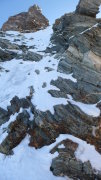
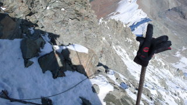
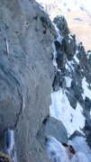
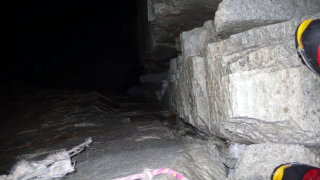

Matterhorn 4478m
Liongrat ZS (AD), Hörnligrat ZS- (AD-)
2008. szeptember 29.
Az Afrikai kőzetlemez félszigetszerűen kinyúló része, az Apuliai lemez a krétakorban tört le, majd egy kontinentális ütközés során 50 millió éve kerültek darabjai az alábukó Európai lemez fölé. Legnevezetesebb darabkája, a Matterhorn ilyenformán Afrika 13. legmagasabb hegye, megelőzve a szomszédos Dent Blanche-t és az ugandai Wagagai-t.
Cerviniából könnyen eljuthatunk az oroszlánok földjére — de legalábbis gerincére —, hiszen a csúcsra vezető klasszikus út, a Liongrat (J. A. Carrel és J. B. Bich, 1865) épp a kőzetlemezek határán kezdődik.
A nehézségek a Carrel ház (3835m) alatt — de már "Afrikában" — kezdődnek. Amióta a Whymper kémény leomlott, egy sima függőleges tábla maradt a helyén, jó fogás vagy bakancsnak való lépés itt nemigen található. Lóg viszont egy vastag "hajókötél", de szezonban így is torlódás várható. Augusztus 21-én öten másztuk a Liongratot (társak: Tolnay Kata, Szintay Gergő, Hivessy Zoli, Turnai Péter), akkor ezen a szakaszon legalább fél órát vártunk a korábban oly magabiztosnak tűnő ibériai kollégákra, hogy remegve felpruszikoljanak. "Szabad kötélmászásban" viszont nem több fél percnél a függőleges rész, főleg biztosítatlanul, de úgy csak jól tapadó kesztyűvel ajánlott. Más jellegű nehézségek leginkább a Tyndall gerincén — a Matterhorn csúcstömbje előtt — várhatók. Vigyázni kell a technikailag könnyebb Hörnligrattal is (E. Whymper és társai, 1865), mert könnyű letévedni az útról.
Szeptember 28-án reggel fél 6-kor indulok Cerviniából — szokás szerint akklimatizálatlanul, de legalább kialudtan. Két óra az Abruzzi ház (2800m), mellette egy román autóban alszanak valakik, mások pedig sátorban ébredeznek. gal A Carrel háznál További 5 óra a Carrel ház, közben találkozok egy lefelé jövő guide-dal és kliensével. A házban csak egy guide szobába zárt madarat találok, a románok csak este érnek fel.
Másnap reggel 4-kor indulok. Ember utoljára két napja mászott itt, a nyomok még látszanak a hóban. Az út kezdetben a gerinc jobb oldalán vezet. A kitettebb részeken fix kötél, a traverzen drótkötél, néhol nittek. A Pic Tyndall gerincére való kimászás kb. III-as nehézségben kezdődik szabadon, aztán egy függőlegesen lelógó lánc mentén folytatódik.
A gerincen jó darabig semmi, a nyomokat is elfújta a szél — bár ma már semmi légmozgás. Hajnalodik. Pengeéles, egyre csipkézettebb gerinc, szűz hó. Néhány izgalmas le-fölmászás, egy helyen túl izgalmas is lenne, szerencsére megtalálom az ereszkedőgyűrűt a hó alatt. gal Csúcstömb A Tyndallról a csúcstömbre való átmászás (Enjambée) is kitett, de a kritikus helyen találok egy kötélgyűrűt. Aztán könnyű jeges mix, majd szárazabb szikla.
|  |
Egy akaratlan nehezítés — nem kellene itt jégcsákánnyal törős V-öst kunsztolni... Kezdek balra kerülni a gerinctől, pedig már jobbra kellene lennem. Vissza, új próba. Nyomok a hóban! Feljebb nittet is találok. Innen egyértelmű, csak hosszadalmas... Végre elérek a fix kötélhez. Kicsit feljebb függőlegessé válik a fal, a kötél mellett kötéllétra is lóg (Scala Jordan). Egy hónapja itt a korhadt fokokba akasztgattam a kantárom "önbiztosítás" gyanánt; most inkább a hajókötelet fogom bal kézzel — már bízok a kesztyűmben. Ezután már könnyű, 10:38-kor az olasz csúcson egyensúlyozok. Élessé válik a gerinc, a csúcskereszt alatt pedig meredek lemászás. Aztán fel a svájci csúcsra, ismét egyensúlyozva és vigyázva a hópárkánnyal.
Meredek lemászás, jóval lejjebb egy kis fix kötél, lemászás, szikla, fix kötél, közben találkozok öt-hat mászóval, akik még felfelé igyekeznek. A lemászásokkal a vártnál lassabban haladok — legalábbis két évvel ezelőtthöz képest, de akkor augusztus volt és az akklimatizáció se hiányzott. A hólejtőkön most csak két csákánnyal érezném biztonságban magam, de azért próbálkozok. A kötelet csak a Solvay ház (4003m) fölött veszem elő.
|  |
A ház alatt is ereszkedek, egészen a hosszú traverzig. Sőt tovább, ugyanis nem találok nyomot a logikusnak tűnő irányban levő hófolton, eltekintve egy barnától, így alkalmi kitérőnek gondolom a helyet. Van viszont egy ereszkedőgyűrű, biztos nem traverzhez rakták ezt ide. Úgy tűnik, hogy a keleti falba kell ereszkedni, aztán valahol lejjebb lesz traverz. Második gyűrű már nincs, csak egy friend, de azért továbbereszkedek rajta. Továbbra sincs semmi, hosszadalmas keresgélés után se, úgyhogy visszamászok és elnézek kicsit távolabb a logikusabbnak tűnő irányban. Szög a falban! A nyomok is megvannak végre, a második nagy barnán túl.
|  |
Visszafojtott lélegzettel átkunsztolok fölötte, aztán kis gyaloglással elérek egy lefelé vezető fix kötélmaradványt. A bele is kilóg, de legalább az utat mutatja. A lemászás után balra át a tarajon, egy nagy "tisztásra" érek, ahol kettéágaznak a nyomok. Jobbra sűrűbb és amúgyis lefele kellemesebb... 3800m alatt kezdek erőre kapni, de már kicsit későn. Néhány további lemászás, ereszkedés, traverz és már rám is sötétedett.
|  |
Úgy tűnik, mintha egy kuloárban folytatódnának a nyomok, kicsit gyanús. Azért elindulok lefelé. Közben megfogok bal kézzel egy jókora kőtömböt, ami egyszercsak elindul felém. Félrehúzódok, lerobajló kövemet csak szép lassan követem, míg kicsit lejjebb rá nem jövök, milyen nyomokat is követtem. Visszamászok, a traverz folytatódik. Egyre több a gyaloglós rész, bár van még egy ereszkedés is, végül az utolsó lemászások. A Hörnlihüttét fél 10 előtt érem el.
Köszönet Tolnay Katának a geológiai szakértésért, valamint az alaptábor túloldalra hajtásáért.
Csizmadia Péter
2008.10.08.